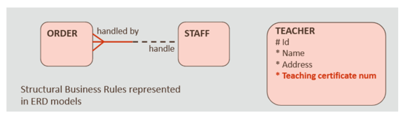
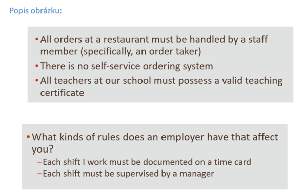
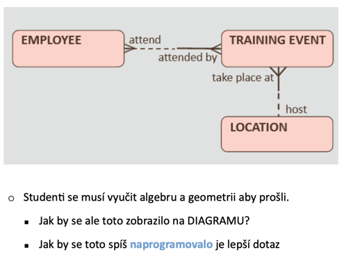
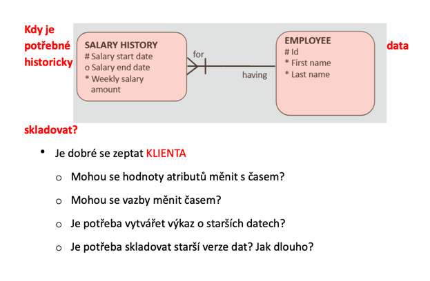

Business-inteligencve
Otázky
Business inteligence
Business inteligence neboli BI je zdokumentování všech potřebných požadavků
je klíčovím pravidlem pro zajištění přesnosti a celistvosti DB
co je potřeba vědět pro udělání dobré business inteligence :
Kdy a jak se dat získávají
Jakého typu jsou informace
Jaké budou vstupy a výstupy
Bezpečnost db
Utajení dat
Veškerou požadovanou funkcionalitu
Cíl
Cílem je zajistit všechny potřebné funkce jsou správně implementovány a pokrývají potřebné business požadavky
ERD
ne všechny BI můžou být zaznamenány v ERD
proto je potřeba tyto pravidla zajisti pomocí dodatečné programování --> např. klientské aplikace
Strukturální pravidla
představují typy informací, které jsou :
uskladňovány --> atributy
Vazby
 
Lze řešit v DB a jsou obecné
Normalizace
Model
Trigger
Procedůra
Příklad pravidel
Je možné/efektivní nemít přiřazeného učitele na konkrétní hodině
Je možné/efektivní aby dva studenti měli stejný ID nebo něměli žádné?
Procedurální pravidla
procesy, workflow, požasdavky nebo postupy k business
jsou často definované, nebo závislé na času
proces A musí být hotový před procesem B
Namísto mapování do ERD se píše do dokumentace--> pak se implementuí programováním
Nelze řešit v DB --> řešení je na klientovi
Příkaldy pravidel
je možné/efektivní aby učitel byl přiřazen do třídy bez žáků?
je možné/efektivní aby byl povolen přístup osobě, která není zapsaná na žádný předmět?

Historické záznamy
jsou to data ve vazebních tabulkách, které byly/jsou/budou
data, která obsahují změny v určitém časovém období
jsou často požadovány k zaznamenání v businessu --> Data mining
Data mining
Proces analýzy dat z různých zdrojů
následné sumarizování do relativních dat
jsou to dat pro vyřešení business problémů
Příklady historických záznamů
Vaše výška v 5/10/15 letech
Cena filmu 2021/2022/2023
Platy zaměstnanců

Sum-up
Modli se k šťastné hvězdě ať si to nevytáhneš
Business inteligence--> zdokumentování všech potřebných požadavků
cílem je zajistit správné zpracování všech požadavků
zaznamenání BI
ERD
DB
Dokumentace
Strukturální pravidla--> uskladňování, vazby. Kam a jak to uložíš do DB. Atributy a vztahy
Procedurální pravidla--> procesy, workflow požadavky pro postupy k businessu. Často časově závislé, píšou se do dokumentace. Musí se naprogramovat
Historické záznamy--> data v tabulkách. obsahují změny v určitém časovém období
Data mining--> analýza dat, jsou důležitá pro splnění businnes požadavků